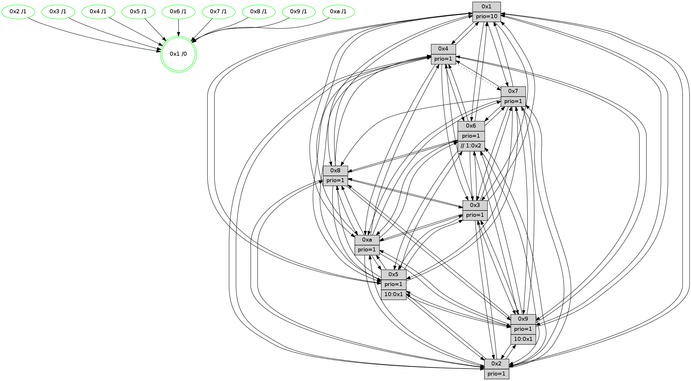

>> << IDX [start] -100 -25 -5 +0 +5 +25 +100 [1525.46203208]
 Previous packets
1520.005097 beacon07(faad) #0 coord=01,02,03,04,05,06,07,0a,09,08 cycle=688.0ms assoc 64 60 4f
1520.015103 beacon0a(faad) #0 coord=01,02,03,04,05,06,07,0a,09,08 cycle=688.0ms assoc 64 11 44
1520.025102 beacon09(faad) #0 coord=01,02,03,04,05,06,07,0a,09,08 cycle=688.0ms assoc 64 9f 93
1520.035102 beacon08(faad) #0 coord=01,02,03,04,05,06,07,0a,09,08 cycle=688.0ms assoc 64 e5 de
1520.046687 [Hello(1): seq=878 sym=4,2,9,5,10,3,8,6,7 sysInfo=coloring-mode-on,ColoringModeRequestCalled stat=4:1,11,9,4/2:1,12,0,7/9:7,8,1,3/5:12,4,8,11/10:2,13,10,8/3:11,13,8,13/8:12,7,4,7/6:4,6,4,3/7:2,11,12,3]
1520.051001 [Color(9) seq=512 @0:0 prio=1 >10.@1,1.@2,1.@3,1.@4]
1520.052679 [Hello(6): seq=969 sym=5,4,7,9,8,10,1 asym=3,2 sysInfo=hasWarning stat=5:14,1,0,6/4:2,6,8,9/7:15,14,6,1/9:5,8,10,12/8:3,3,1,10/10:7,6,3,13/1:8,6,11,1/3:7,12,10,0/2:12,2,4,1]
1520.056328 [Hello(3): seq=969 sym=1,7,6,4,8,9,10,5 sysInfo=hasWarning stat=1:5,3,13,0/7:3,10,13,0/6:1,3,0,0/4:6,14,15,14/8:9,10,6,9/9:15,3,6,2/10:15,3,11,5/5:9,3,7,3]
1520.059647 [Color(3) seq=598 @0:0 prio=1]
1520.062432 [Color(6) seq=601 @0:0 prio=1 >>1.@2,1.@3,1.@4]
1520.066224 [Hello(2): seq=965 sym=4,5,7,6,3,9,8,10,1 sysInfo=hasWarning stat=4:2,11,8,14/5:9,4,11,4/7:3,13,12,3/6:2,4,0,0/3:10,1,9,2/9:15,8,2,11/8:13,9,5,0/10:15,6,1,11/1:15,4,5,0]
1520.070058 [Hello(5): seq=969 sym=7,6,4,3,1,9,8,10,2 sysInfo=hasWarning stat=7:13,14,14,1/6:10,3,3,0/4:8,5,4,0/3:7,7,5,3/1:5,6,4,0/9:4,4,10,12/8:1,12,4,8/10:14,13,13,9/2:9,14,3,9]
1520.072878 [Color(5) seq=505 @0:0 prio=1 >10.@1,1.@2,1.@3,1.@4]
1520.074955 [Color(10) seq=558 @0:0 prio=1]
1520.084981 [Color(2) seq=545 @0:0 prio=1]
----------------------------------------------------------------------
1520.733247 beacon01(faad) #0 coord=01,02,03,04,05,06,07,0a,09,08 cycle=688.0ms assoc
-- color-indic=1 64 cc 0b
1520.743229 beacon02(faad) #0 coord=01,02,03,04,05,06,07,0a,09,08 cycle=688.0ms assoc 64 5f 3a
1520.753229 beacon03(faad) #0 coord=01,02,03,04,05,06,07,0a,09,08 cycle=688.0ms assoc 64 25 77
1520.763230 beacon04(faad) #0 coord=01,02,03,04,05,06,07,0a,09,08 cycle=688.0ms assoc 64 52 9d
1520.773228 beacon05(faad) #0 coord=01,02,03,04,05,06,07,0a,09,08 cycle=688.0ms assoc 64 28 d0
1520.783230 beacon06(faad) #0 coord=01,02,03,04,05,06,07,0a,09,08 cycle=688.0ms assoc 64 a6 07
1520.793231 beacon07(faad) #0 coord=01,02,03,04,05,06,07,0a,09,08 cycle=688.0ms assoc 64 dc 4a
1520.803237 beacon0a(faad) #0 coord=01,02,03,04,05,06,07,0a,09,08 cycle=688.0ms assoc 64 ad 41
1520.823235 beacon08(faad) #0 coord=01,02,03,04,05,06,07,0a,09,08 cycle=688.0ms assoc 64 59 db
1520.834766 [Hello(9): seq=913 sym=2,5,3,4,7,6,8,10,1 sysInfo=hasWarning stat=2:0,2,13,13/5:3,7,5,0/3:13,8,8,7/4:12,0,5,3/7:6,9,5,5/6:0,4,9,1/8:10,8,3,9/10:15,0,6,0/1:8,0,11,1]
1520.838237 [Color(1) seq=649 @0:0 prio=10]
1520.840330 [Hello(4): seq=969 sym=5,8,6,2,3,9,7,10,1 sysInfo=hasWarning stat=5:0,9,6,4/8:11,5,1,0/6:6,4,2,2/2:8,5,9,3/3:4,15,1,1/9:15,8,10,3/7:2,4,0,0/10:5,13,2,14/1:0,11,12,1]
1520.843358 [Hello(10): seq=902 sym=6,2,3,8,7,5,9,4,1 sysInfo=hasWarning stat=6:2,1,8,5/2:1,10,11,2/3:7,1,2,15/8:4,4,15,6/7:0,13,12,10/5:6,11,4,3/9:1,9,12,2/4:2,0,9,3/1:9,9,10,1]
1520.846218 [Hello(7): seq=969 sym=2,3,5,6,8,4,9,10,1 sysInfo=hasWarning stat=2:13,0,6,6/3:3,9,10,6/5:4,9,8,5/6:7,6,7,13/8:7,14,1,1/4:1,2,1,0/9:15,9,2,3/10:11,5,15,7/1:14,3,7,0]
1520.850945 [Color(7) seq=497 @0:0 prio=1]
1520.857177 [Hello(8): seq=913 sym=5,2,3,7,9,6,4,10,1 sysInfo=hasWarning stat=5:2,12,4,3/2:9,12,15,14/3:1,14,4,6/7:2,5,2,1/9:12,0,5,6/6:9,13,1,1/4:12,3,11,2/10:5,13,11,5/1:6,3,12,0]
1520.860947 [Color(8) seq=568 @0:0 prio=1]
1520.865947 [Color(4) seq=508 @0:0 prio=1]
----------------------------------------------------------------------
1521.521379 beacon01(faad) #0 coord=01,02,03,04,05,06,07,0a,09,08 cycle=688.0ms assoc
-- color-indic=1 64 f8 13
1521.531362 beacon02(faad) #0 coord=01,02,03,04,05,06,07,0a,09,08 cycle=688.0ms assoc 64 6b 22
1521.541362 beacon03(faad) #0 coord=01,02,03,04,05,06,07,0a,09,08 cycle=688.0ms assoc 64 11 6f
1521.551362 beacon04(faad) #0 coord=01,02,03,04,05,06,07,0a,09,08 cycle=688.0ms assoc 64 66 85
1521.561362 beacon05(faad) #0 coord=01,02,03,04,05,06,07,0a,09,08 cycle=688.0ms assoc 64 1c c8
1521.571361 beacon06(faad) #0 coord=01,02,03,04,05,06,07,0a,09,08 cycle=688.0ms assoc 64 92 1f
1521.581363 beacon07(faad) #0 coord=01,02,03,04,05,06,07,0a,09,08 cycle=688.0ms assoc 64 e8 52
1521.591368 beacon0a(faad) #0 coord=01,02,03,04,05,06,07,0a,09,08 cycle=688.0ms assoc 64 99 59
1521.611368 beacon08(faad) #0 coord=01,02,03,04,05,06,07,0a,09,08 cycle=688.0ms assoc 64 6d c3
1521.622318 [Hello(1): seq=879 sym=4,2,9,5,10,3,8,6,7 sysInfo=coloring-mode-on,ColoringModeRequestCalled stat=4:2,12,9,4/2:2,13,0,7/9:8,9,1,3/5:13,5,8,11/10:3,14,10,8/3:12,14,8,13/8:13,8,4,7/6:5,7,4,3/7:3,12,12,3]
1521.626322 [Color(10) seq=559 @0:0 prio=1]
1521.628089 [Hello(2): seq=966 sym=4,5,7,6,3,9,8,10,1 sysInfo=hasWarning stat=4:3,12,8,14/5:9,4,11,4/7:4,14,12,3/6:2,4,0,0/3:10,1,9,2/9:0,8,2,11/8:14,10,5,0/10:0,6,1,11/1:0,5,5,0]
1521.630751 [Color(9) seq=513 @0:0 prio=1 >10.@1,1.@2,1.@3,1.@4]
1521.633676 [Hello(6): seq=970 sym=2,5,4,7,9,8,10,1 asym=3 sysInfo=hasWarning stat=2:13,3,4,1/5:15,2,0,6/4:3,7,8,9/7:0,15,6,1/9:6,8,10,12/8:4,4,1,10/10:8,7,3,13/1:9,7,11,1/3:7,12,10,0]
1521.636881 [Color(6) seq=602 @0:0 prio=1 >>1.@2,1.@3,1.@4]
1521.638924 [Hello(3): seq=970 sym=1,7,6,2,4,8,9,10,5 sysInfo=hasWarning stat=1:6,4,13,0/7:4,11,13,0/6:1,4,0,0/2:0,1,0,0/4:7,15,15,14/8:10,11,6,9/9:0,3,6,2/10:0,4,11,5/5:10,4,7,3]
1521.642574 [Hello(5): seq=970 sym=7,6,4,3,1,9,8,10,2 sysInfo=hasWarning stat=7:14,15,14,1/6:10,3,3,0/4:9,6,4,0/3:7,7,5,3/1:6,7,4,0/9:5,4,10,12/8:2,13,4,8/10:15,14,13,9/2:9,15,3,9]
1521.645536 [Color(2) seq=546 @0:0 prio=1]
1521.646975 [Color(5) seq=506 @0:0 prio=1 >10.@1,1.@2,1.@3,1.@4]
1521.650650 [Color(3) seq=599 @0:0 prio=1]
----------------------------------------------------------------------
1522.309510 beacon01(faad) #0 coord=01,02,03,04,05,06,07,0a,09,08 cycle=688.0ms assoc
-- color-indic=1 64 44 16
1522.319491 beacon02(faad) #0 coord=01,02,03,04,05,06,07,0a,09,08 cycle=688.0ms assoc 64 d7 27
1522.329492 beacon03(faad) #0 coord=01,02,03,04,05,06,07,0a,09,08 cycle=688.0ms assoc 64 ad 6a
1522.339493 beacon04(faad) #0 coord=01,02,03,04,05,06,07,0a,09,08 cycle=688.0ms assoc 64 da 80
1522.349493 beacon05(faad) #0 coord=01,02,03,04,05,06,07,0a,09,08 cycle=688.0ms assoc 64 a0 cd
1522.359494 beacon06(faad) #0 coord=01,02,03,04,05,06,07,0a,09,08 cycle=688.0ms assoc 64 2e 1a
1522.369495 beacon07(faad) #0 coord=01,02,03,04,05,06,07,0a,09,08 cycle=688.0ms assoc 64 54 57
1522.379498 beacon0a(faad) #0 coord=01,02,03,04,05,06,07,0a,09,08 cycle=688.0ms assoc 64 25 5c
1522.399498 beacon08(faad) #0 coord=01,02,03,04,05,06,07,0a,09,08 cycle=688.0ms assoc 64 d1 c6
1522.412932 [Hello(10): seq=903 sym=6,2,3,8,7,5,9,4,1 sysInfo=hasWarning stat=6:3,2,8,5/2:2,11,11,2/3:8,2,2,15/8:5,5,15,6/7:1,14,12,10/5:7,12,4,3/9:1,10,12,2/4:2,1,9,3/1:10,9,10,1]
1522.415961 [STC(1) #0.271 tree-change,inconsistent-stability,stable,to-color d=0]
1522.417573 [Hello(8): seq=914 sym=5,2,3,9,6,4,10,1 sysInfo=hasWarning stat=5:3,13,4,3/2:10,13,15,14/3:2,15,4,6/9:13,1,5,6/6:10,14,1,1/4:12,4,11,2/10:5,14,11,5/1:7,4,12,0]
1522.420262 [Hello(7): seq=970 sym=2,3,5,6,8,4,9,10,1 sysInfo=hasWarning stat=2:14,1,6,6/3:4,10,10,6/5:5,10,8,5/6:8,7,7,13/8:8,15,1,1/4:1,3,1,0/9:0,10,2,3/10:11,6,15,7/1:15,4,7,0]
1522.422862 [Color(1) seq=650 @0:0 prio=10]
1522.427370 [Color(7) seq=498 @0:0 prio=1]
1522.431123 [Hello(4): seq=970 sym=5,6,2,3,9,10,1 asym=7 sysInfo=hasWarning stat=5:1,10,6,4/6:7,5,2,2/2:9,6,9,3/3:5,0,1,1/9:0,9,10,3/10:5,14,2,14/1:1,12,12,1/7:2,4,0,0]
1522.434211 [Color(4) seq=509 @0:0 prio=1]
1522.440501 [Color(8) seq=569 @0:0 prio=1]
----------------------------------------------------------------------
1523.097641 beacon01(faad) #0 coord=01,02,03,04,05,06,07,0a,09,08 cycle=688.0ms assoc
-- color-indic=1 64 80 18
1523.107624 beacon02(faad) #0 coord=01,02,03,04,05,06,07,0a,09,08 cycle=688.0ms assoc 64 13 29
1523.117624 beacon03(faad) #0 coord=01,02,03,04,05,06,07,0a,09,08 cycle=688.0ms assoc 64 69 64
1523.127624 beacon04(faad) #0 coord=01,02,03,04,05,06,07,0a,09,08 cycle=688.0ms assoc 64 1e 8e
1523.137624 beacon05(faad) #0 coord=01,02,03,04,05,06,07,0a,09,08 cycle=688.0ms assoc 64 64 c3
1523.147623 beacon06(faad) #0 coord=01,02,03,04,05,06,07,0a,09,08 cycle=688.0ms assoc 64 ea 14
1523.157625 beacon07(faad) #0 coord=01,02,03,04,05,06,07,0a,09,08 cycle=688.0ms assoc 64 90 59
1523.167628 beacon0a(faad) #0 coord=01,02,03,04,05,06,07,0a,09,08 cycle=688.0ms assoc 64 e1 52
1523.187628 beacon08(faad) #0 coord=01,02,03,04,05,06,07,0a,09,08 cycle=688.0ms assoc 64 15 c8
1523.198890 [Hello(1): seq=880 sym=4,2,9,5,10,3,8,6,7 sysInfo=coloring-mode-on,ColoringModeRequestCalled stat=4:3,13,9,4/2:3,14,0,7/9:8,10,1,3/5:14,6,8,11/10:4,15,10,8/3:13,15,8,13/8:13,9,4,7/6:6,8,4,3/7:3,13,12,3]
1523.202361 [STC(9)->1 #0.271 tree-change,inconsistent-stability,stable,to-color d=1]
1523.203816 [Hello(6): seq=971 sym=3,2,5,4,7,9,8,10,1 sysInfo=hasWarning stat=3:8,13,10,0/2:13,4,4,1/5:0,3,0,6/4:4,8,8,9/7:1,0,6,1/9:6,8,10,12/8:5,5,1,10/10:9,8,3,13/1:10,8,12,1]
1523.206831 [Hello(3): seq=971 sym=1,7,6,2,4,8,9,10,5 sysInfo=hasWarning stat=1:7,5,14,0/7:5,12,13,0/6:1,4,0,0/2:0,1,0,0/4:8,0,15,14/8:11,12,6,9/9:0,3,6,2/10:1,5,11,5/5:10,4,7,3]
1523.209461 [Hello(5): seq=971 sym=7,6,4,3,1,9,8,10,2 sysInfo=hasWarning stat=7:15,0,14,1/6:10,3,3,0/4:10,7,4,0/3:7,8,5,3/1:7,8,5,0/9:5,4,10,12/8:3,14,4,8/10:15,14,13,9/2:9,15,3,9]
1523.213248 [STC(5)->1 #0.271 tree-change,inconsistent-stability,stable,to-color d=1]
1523.214966 [Hello(2): seq=967 sym=4,5,7,6,3,9,8,10,1 sysInfo=hasWarning stat=4:4,13,8,14/5:9,5,11,4/7:5,15,12,3/6:2,4,0,0/3:10,2,9,2/9:0,8,2,11/8:15,11,5,0/10:1,7,1,11/1:1,6,6,0]
1523.217612 [STC(3)->1 #0.271 tree-change,inconsistent-stability,stable,to-color d=1]
1523.220006 [STC(2)->1 #0.271 tree-change,inconsistent-stability,stable,to-color d=1]
1523.221262 [Color(9) seq=514 @0:0 prio=1 >10.@1,1.@2,1.@3,1.@4]
1523.223995 [Color(3) seq=600 @0:0 prio=1]
1523.227736 [Color(2) seq=547 @0:0 prio=1]
1523.230272 [STC(10)->1 #0.271 tree-change,inconsistent-stability,stable,to-color d=1]
1523.233181 [Color(10) seq=560 @0:0 prio=1]
1523.235051 [STC(6)->1 #0.271 tree-change,inconsistent-stability,stable,to-color d=1]
1523.236768 [Color(5) seq=507 @0:0 prio=1 >10.@1,1.@2,1.@3,1.@4]
1523.240361 [Color(6) seq=603 @0:0 prio=1 >>1.@2,1.@3,1.@4]
----------------------------------------------------------------------
1523.885772 beacon01(faad) #0 coord=01,02,03,04,05,06,07,0a,09,08 cycle=688.0ms assoc
-- color-indic=1 64 3c 1d
1523.895756 beacon02(faad) #0 coord=01,02,03,04,05,06,07,0a,09,08 cycle=688.0ms assoc 64 af 2c
1523.905755 beacon03(faad) #0 coord=01,02,03,04,05,06,07,0a,09,08 cycle=688.0ms assoc 64 d5 61
1523.915754 beacon04(faad) #0 coord=01,02,03,04,05,06,07,0a,09,08 cycle=688.0ms assoc 64 a2 8b
1523.925755 beacon05(faad) #0 coord=01,02,03,04,05,06,07,0a,09,08 cycle=688.0ms assoc 64 d8 c6
1523.935756 beacon06(faad) #0 coord=01,02,03,04,05,06,07,0a,09,08 cycle=688.0ms assoc 64 56 11
1523.945755 beacon07(faad) #0 coord=01,02,03,04,05,06,07,0a,09,08 cycle=688.0ms assoc 64 2c 5c
1523.955761 beacon0a(faad) #0 coord=01,02,03,04,05,06,07,0a,09,08 cycle=688.0ms assoc 64 5d 57
1523.975760 beacon08(faad) #0 coord=01,02,03,04,05,06,07,0a,09,08 cycle=688.0ms assoc 64 a9 cd
1523.987623 [Hello(9): seq=915 sym=2,5,3,4,7,6,8,10,1 sysInfo=hasWarning stat=2:0,4,13,13/5:4,9,5,0/3:14,10,8,7/4:14,2,5,3/7:8,11,5,5/6:1,6,10,1/8:12,10,3,9/10:0,1,7,0/1:10,2,12,1]
1523.990961 [Hello(10): seq=904 sym=6,2,3,8,7,5,9,4,1 sysInfo=hasWarning stat=6:3,3,9,5/2:2,11,11,2/3:8,2,2,15/8:6,6,15,6/7:2,15,12,10/5:7,13,4,3/9:1,10,13,2/4:3,2,9,3/1:11,10,11,1]
1523.995274 [Hello(4): seq=971 sym=5,6,2,3,9,10,1 asym=7 sysInfo=hasWarning stat=5:2,11,7,4/6:8,6,3,2/2:10,7,10,3/3:6,1,2,1/9:1,10,11,3/10:5,15,3,14/1:2,12,12,1/7:2,4,0,0]
1523.998183 [Hello(7): seq=971 sym=2,3,5,6,8,4,9,10,1 sysInfo=hasWarning stat=2:15,2,7,6/3:5,11,11,6/5:6,11,9,5/6:9,8,8,13/8:8,0,1,1/4:2,4,1,0/9:0,11,3,3/10:12,7,0,7/1:0,4,7,0]
1524.001428 [Hello(8): seq=915 sym=5,2,3,9,6,4,10,1 sysInfo=hasWarning stat=5:4,14,5,3/2:11,14,0,14/3:3,0,5,6/9:13,2,6,6/6:11,15,2,1/4:12,4,11,2/10:6,15,12,5/1:8,4,12,0]
1524.003770 [Color(1) seq=651 @0:0 prio=10]
1524.005223 [Color(8) seq=570 @0:0 prio=1]
1524.012058 [Color(4) seq=510 @0:0 prio=1]
1524.018989 [Color(7) seq=499 @0:0 prio=1]
----------------------------------------------------------------------
1524.673903 beacon01(faad) #0 coord=01,02,03,04,05,06,07,0a,09,08 cycle=688.0ms assoc
-- color-indic=1 64 9b 6d
1524.683885 beacon02(faad) #0 coord=01,02,03,04,05,06,07,0a,09,08 cycle=688.0ms assoc 64 08 5c
1524.693884 beacon03(faad) #0 coord=01,02,03,04,05,06,07,0a,09,08 cycle=688.0ms assoc 64 72 11
1524.703887 beacon04(faad) #0 coord=01,02,03,04,05,06,07,0a,09,08 cycle=688.0ms assoc 64 05 fb
1524.713885 beacon05(faad) #0 coord=01,02,03,04,05,06,07,0a,09,08 cycle=688.0ms assoc 64 7f b6
1524.723885 beacon06(faad) #0 coord=01,02,03,04,05,06,07,0a,09,08 cycle=688.0ms assoc 64 f1 61
1524.733886 beacon07(faad) #0 coord=01,02,03,04,05,06,07,0a,09,08 cycle=688.0ms assoc 64 8b 2c
1524.743892 beacon0a(faad) #0 coord=01,02,03,04,05,06,07,0a,09,08 cycle=688.0ms assoc 64 fa 27
1524.763891 beacon08(faad) #0 coord=01,02,03,04,05,06,07,0a,09,08 cycle=688.0ms assoc 64 0e bd
1524.774844 [Hello(1): seq=881 sym=4,2,9,5,10,3,8,6,7 sysInfo=coloring-mode-on,ColoringModeRequestCalled stat=4:3,14,9,4/2:4,15,1,7/9:9,11,2,3/5:15,7,9,11/10:4,0,11,8/3:14,0,9,13/8:13,10,4,7/6:7,9,5,3/7:3,14,12,3]
1524.778029 [Color(9) seq=515 @0:0 prio=1 >10.@1,1.@2,1.@3,1.@4]
1524.779905 [Hello(2): seq=968 sym=4,5,7,6,3,9,8,10,1 sysInfo=hasWarning stat=4:5,14,8,14/5:9,6,11,4/7:6,0,12,3/6:2,5,1,0/3:10,2,9,2/9:1,9,3,11/8:0,12,5,0/10:2,8,2,11/1:2,7,6,0]
1524.782911 [Color(10) seq=561 @0:0 prio=1]
1524.784189 [Hello(6): seq=972 sym=3,2,5,4,7,9,8,10,1 sysInfo=hasWarning stat=3:8,13,10,0/2:13,4,4,1/5:0,3,0,6/4:5,9,8,9/7:2,1,6,1/9:7,8,11,12/8:6,6,1,10/10:10,8,3,13/1:11,9,12,1]
1524.787159 [Hello(5): seq=972 sym=7,6,4,3,1,9,8,10,2 sysInfo=hasWarning stat=7:0,1,14,1/6:10,4,3,0/4:11,8,4,0/3:7,8,5,3/1:8,9,5,0/9:6,4,10,12/8:4,15,4,8/10:0,14,13,9/2:9,15,3,9]
1524.789692 [Color(6) seq=604 @0:0 prio=1 >>1.@2,1.@3,1.@4]
1524.791572 [Color(5) seq=508 @0:0 prio=1 >10.@1,1.@2,1.@3,1.@4]
1524.793594 [Hello(3): seq=972 sym=1,7,6,2,4,8,9,10,5 sysInfo=hasWarning stat=1:8,6,14,0/7:6,13,13,0/6:1,5,1,0/2:0,2,0,0/4:9,1,15,14/8:12,13,6,9/9:1,3,7,2/10:2,6,12,5/5:10,5,7,3]
1524.796425 [Color(3) seq=601 @0:0 prio=1]
1524.798177 [Color(2) seq=548 @0:0 prio=1]